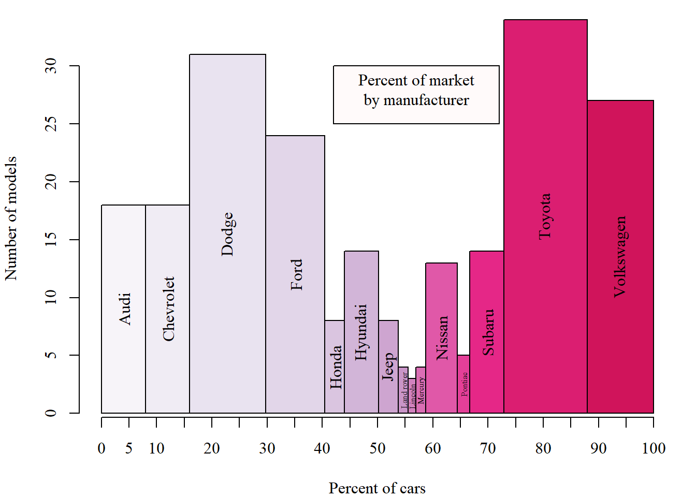

# Team GeoVIS
# Members : Changho Lee, Americo Gamarra, Brennan Stout, Umme Kulsum - Coordinator
library(tidyverse)
library(ggplot2)
data <- mpg
font <- "serif"
data$model<-paste0(toupper(substr(data$model, 1, 1)), substr(data$model, 2, nchar(data$model)))
data$manufacturer<-paste0(toupper(substr(data$manufacturer, 1, 1)), substr(data$manufacturer, 2, nchar(data$manufacturer)))
## 1st Graph
library(dplyr)
library(RColorBrewer)
uniq <- count(unique(data,vars = c(manufacturer, cty)),vars=manufacturer)
qual_colors <- colorRampPalette(brewer.pal(9, "PuRd"))(20)
newdata <- data[ which(data$manufacturer=='ford'), ]
total <- sum(uniq$n)
widths <- c()
for (m in 1:length(uniq$vars)){
widths <- append(widths, (uniq$n[m]/total)*100)
}
heights = uniq$n
par( mar= c(4,4,1,1),family=font )
p <- barplot(heights, widths, space=0,
col = qual_colors, xlab = "Percent of cars", ylab = "Number of models")
text(x = p, y = heights/2, labels = uniq$vars, cex=ifelse(uniq$vars%in%c("Land rover","Lincoln","Mercury","Pontiac"),0.5,1), srt=90)
axis(1, seq(0,100,5))
polygon(c(42,42,72,72), c(25, 30, 30, 25), col="snow")
text(57, 28, "Percent of market\nby manufacturer", cex=1)